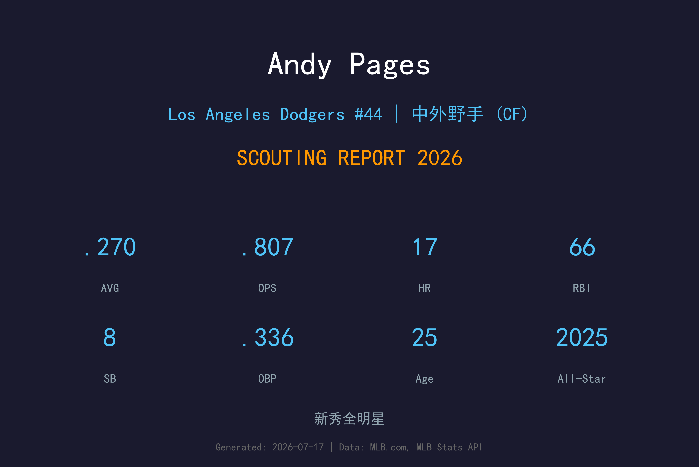
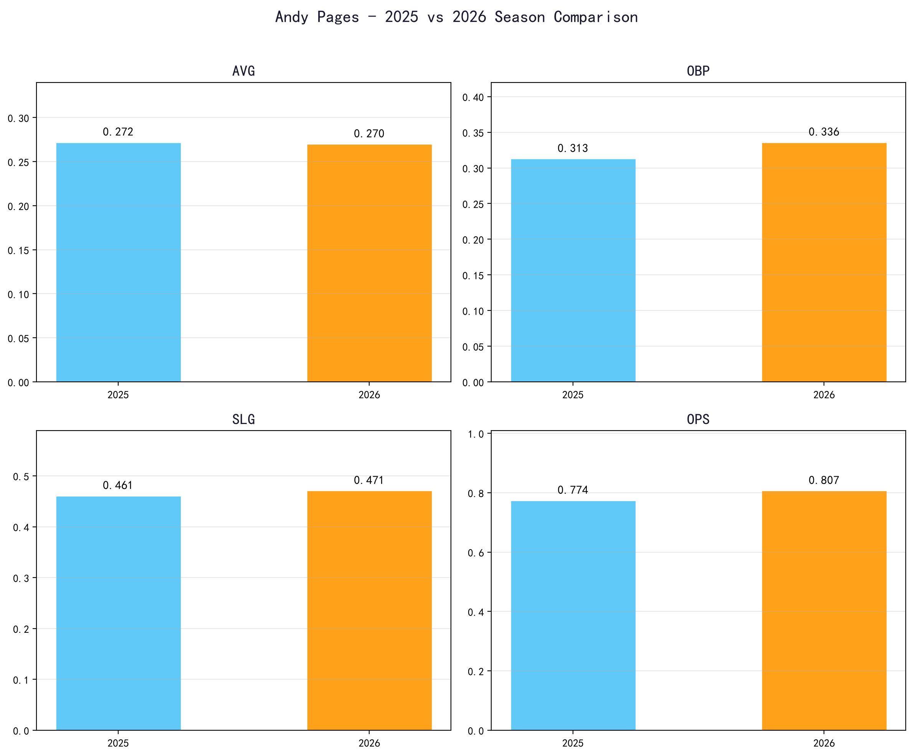
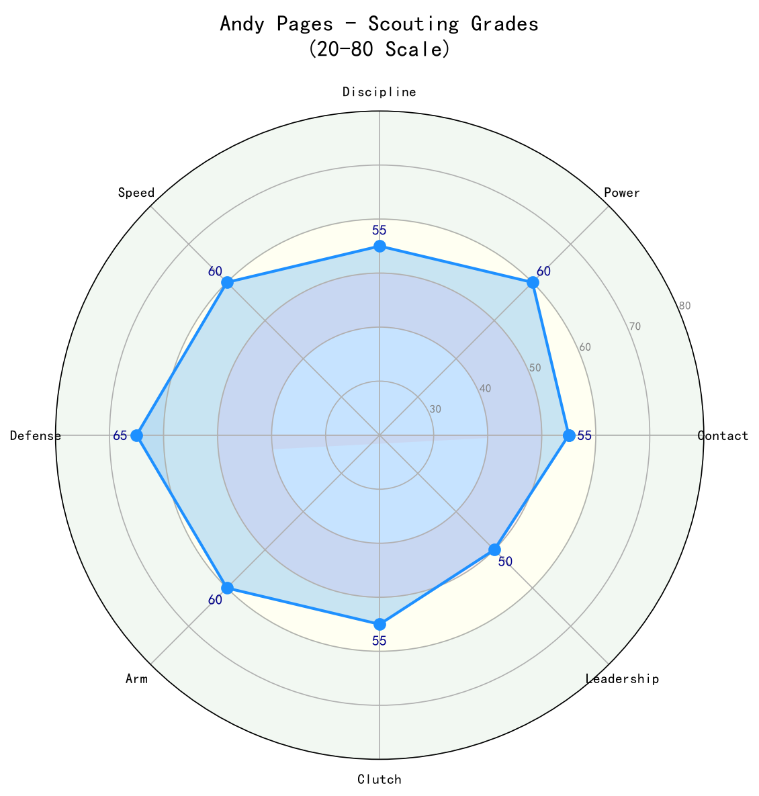

Los Angeles Dodgers #44 | 中外野手 | 右打 | 新秀全明星

Andy Pages 是道奇队最具潜力的年轻球员之一，以中外野的 premium position、右打力量和持续进步的选球能力崭露头角。
2025年，他在完整赛季中击出27轰、86打点，首次入选全明星，展现成为球队长期中外野手的潜力。2026年，他的OPS进一步提升至.807，上垒率从.313提升至.336，显示plate discipline持续进步。
Pages 的速度、臂力和防守范围使他成为道奇外野的未来核心。25岁的他仍有巨大成长空间，是道奇农场体系最成功的培养案例之一。
2024年4月16日完成大联盟首秀，迅速展现 power-speed 潜力。
.272 AVG | .461 SLG | 27 HR | 86 RBI | 14 SB
在完整赛季中证明自己是道奇外野的未来核心，首次入选全明星。
.270 AVG | .336 OBP | .471 SLG | .807 OPS | 17 HR | 66 RBI
上垒率和OPS双双提升，展现 maturity 与 adjustability。

| 赛季 | G | AVG | OBP | SLG | OPS | HR | RBI | BB | SO |
|---|---|---|---|---|---|---|---|---|---|
| 2025 | 156 | .272 | .313 | .461 | .774 | 27 | 86 | 29 | 135 |
| 2026 | 96 | .270 | .336 | .471 | .807 | 17 | 66 | 34 | 80 |
Pages 的挥棒充满爆发力，出手速度快，能够将球打到所有方向。他的力量主要来自下半身和髋部旋转， his bat speed 使他能够处理高球速。2026年他在选球上的进步尤其明显，保送率从4.6%提升至8.3%。
选球是 Pages 最大的进步点。2025年他仅有29次保送，但2026年已经34次，且出赛场次还更少。如果他继续改善击球区纪律，上垒率有望突破.350。
Pages 是道奇中外野的首选。他的速度、判断力和第一步反应使他能够覆盖大量中外野范围。臂力足以阻止跑者推进，是 premium position 的 elite defender。
25岁的 Pages 仍在学习大联盟投手。他的三振率仍偏高（19.5%），面对变化球时偶尔出棒过大。如果能够提升两好球后的contact能力，他将成为.280/.350/.500级别的全明星。

年轻且全面，是道奇未来5-10年的中外野答案
B+ 级 / 潜力全明星
Andy Pages 是道奇队未来最光明的资产之一。他在25岁就已经是联盟平均以上的中外野手，并且每年都有明显进步。如果他的选球和contact能力继续发展，他有望成为年度全明星甚至MVP候选人。
2026（下半季）：OPS有望维持在.800+，全季约25轰、12盗
2027-2028：进入全明星常客，.280/.350/.500，30轰+20盗
2029+：道奇外野核心，可能获得金手套并进入MVP讨论
Andy Pages 出生于古巴，是近年来道奇从古巴签下最成功的年轻球员之一。他在2017年离开古巴，2018年以自由球员身份与洛杉矶道奇签约，签约金达到当年国际自由球员市场的顶额。
Pages 在道奇农场系统中迅速上升，以出色的中外野防守和 原始力量 著称。2024年4月16日，他完成大联盟首秀。尽管首个赛季有起伏，但他在2025年就打出27轰、86打点的完整赛季，并首次入选全明星。
Pages 的成长速度超出预期，他被视为道奇继 Cody Bellinger 之后最重要的中外野培养成果。他的古巴背景也使他成为拉丁美洲年轻球员在道奇体系的榜样。
场外，Pages 以谦逊和努力工作闻名。他的英语进步迅速，与队友关系融洽。他喜欢音乐和家庭聚会，是道奇更衣室中受欢迎的成员。